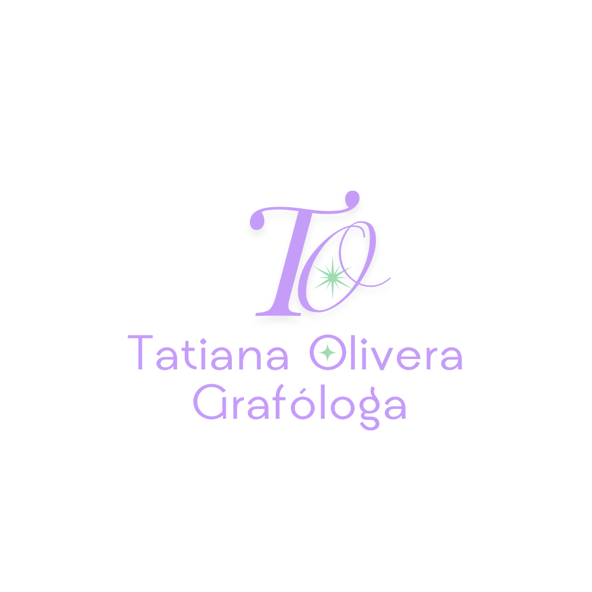

Grafología en RRHH: Mitos y realidades.
Desmitificamos el uso de la firma en las entrevistas de trabajo...
Especialista en Grafonálisis aplicado al ámbito personal, empresarial y judicial.Traducimos tu escritura en indicadores de valor.
Agendar sesión de analisisANALISIS GESTALTICO
Precisión técnica
La escritura es una ventana única hacia nuestra personalidad. Mi enfoque trasciende la interpretación subjetiva: a través del rigor científico, exploro la conexión entre la neurofisiología y el movimiento gráfico.
Acompaño a personas y organizaciones a descubrir su máximo potencial. Utilizo la grafología como una herramienta de precisión para el autoconocimiento profundo, la evaluación de competencias en el entorno laboral y el análisis de documentos. Transformo el gesto gráfico en información estratégica y de valor, ofreciéndote indicadores claros para potenciar tu desarrollo personal y profesional.
Explora el mundo del grafoanálisis en nuestro diario digital.

Desmitificamos el uso de la firma en las entrevistas de trabajo...
Cómo el sistema nervioso central dicta la presión de la pluma...